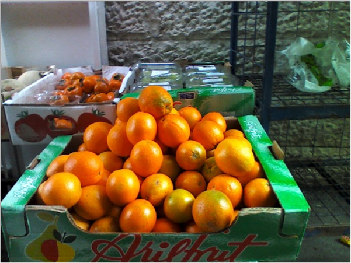

|
Namespace Hierarchy
Description
|
The BlurType enumerator correlates to different Point Spread Functions (PSF), which are the response of an image system to a point source object.
See Figure 75 for the original picture and Figure 76 to Figure 155 applying different blur effects.
|
Name/Description
|
BLUR_EXPONENTIAL
|
This blur type is an approximation of a 1/r kernel. The model is often used to model blur of optical systems. See Figure 76.
|
|
BLUR_GAUSSIAN
|
This blur type uses an approximation of a Gaussian kernel. This model is commonly used to model blur caused atmospheric seeing. See Figure 77
|
|
BLUR_CYLINDER
|
This blur type uses a hard circular kernel. This model is often used to model a blur caused by out of focus lens system. See Figure 78.
|
|
BLUR_PSEUDO_CYLINDER_SYNC
|
This blur type is an approximation to cylinder with sharper results. It's the inverse Hankel transform of a sync. See Figure 79.
|

Figure 75: The Original Image
Figure 76: The Exponential Blur Type, Aperture=50.
Figure 77: The Gaussian Blur Type with Aperture=50.
Figure 78: The Cylinder Blur Type with Aperture=50.
Figure 79: The Pseudo Cylinder Blur Type with Aperture=50.
|